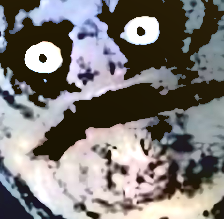

Ra.js is a one for all js library that aims to avoid npm dependency hell for browser javascript.

const elem1 = $("#test");
const elem2 = $(".test")[0];
Ra.js provides a simple interface to access cookies on the frontend side. Refresh this page and check the value of the box:
Code:
Alternatively:
Cookies.set("name", "value");
Cookies.get("name", "default_value");
Ra.js provides a Color class that has a lot of tricks!